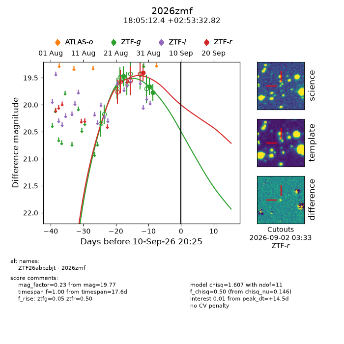
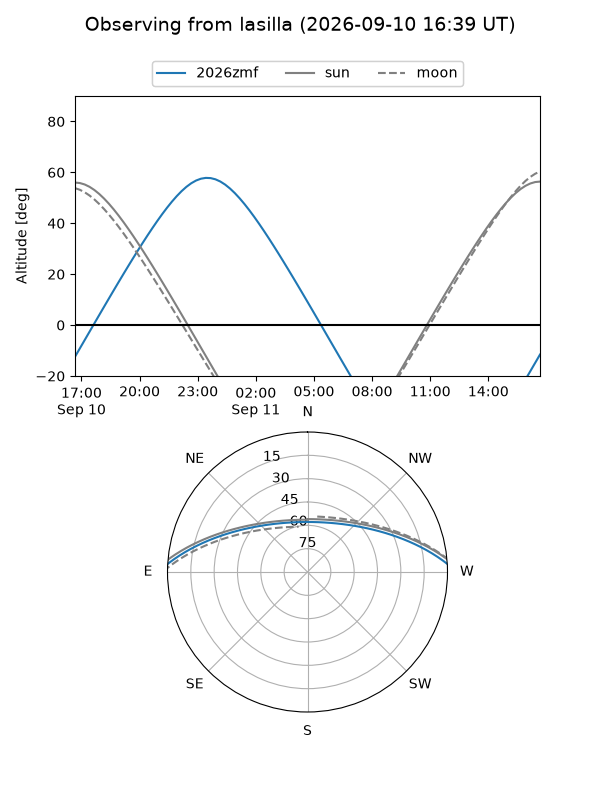
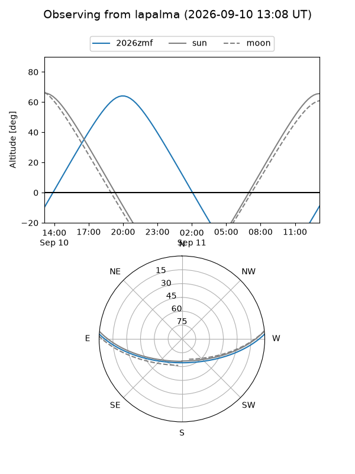
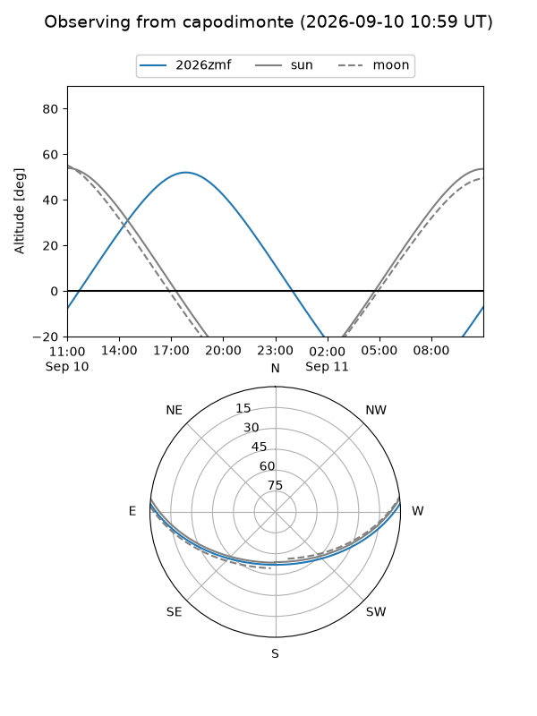
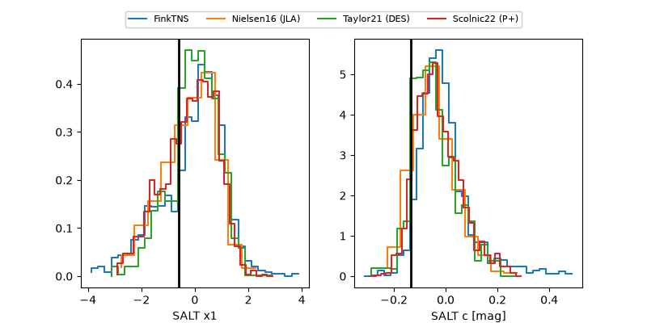

2026zmf
Target 2026zmf at 2026-09-11 06:42
Aliases and brokers:
FINK-ZTF: ztf.fink-portal.org/ZTF26abpzbjt
Lasair-ZTF: lasair-ztf.lsst.ac.uk/objects/ZTF26abpzbjt
ALeRCE-ZTF: alerce.online/object/ZTF26abpzbjt
YSE-PZ: ziggy.ucolick.org/yse/transient_detail/2026zmf
TNS name: wis-tns.org/object/2026zmf
Direct TNS query: direct search
alt names
ZTF26abpzbjt (ztf,fink_ztf)
2026zmf (tns,yse)
Coordinates:
equatorial (ra, dec) = 271.3015,+2.89245
equatorial (HMS+DMS) = 18:05:12.37,+02:53:32.82
galactic (l, b) = (30.2208,+11.60126)
Flags:
TNS type: nan
peak dt: +15.0
Photometry:
last ztfg=19.77, ztfr=19.41
3 ztfg, 1 ztfr detections
Lightcurve

Visibility



Additional plots
